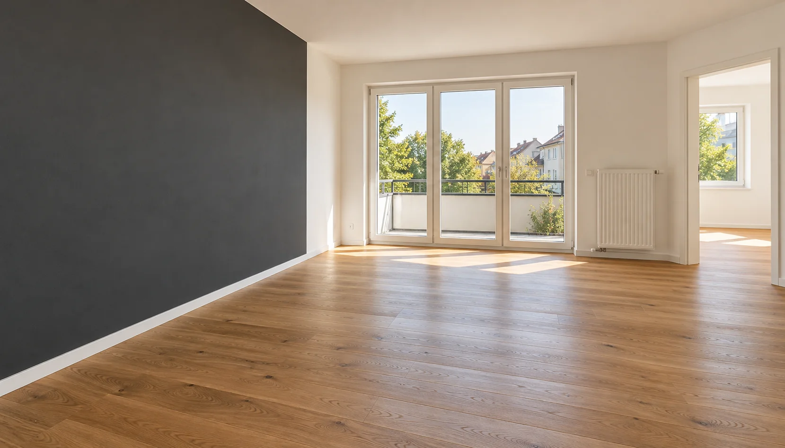

BABIN BAU / Bodenverlegung
Bodenverlegung
Die Basis für schönes Wohnen.
Sorgfalt macht den Unterschied
Die Basis für schönes Wohnen.
Ein neuer Boden bringt Wärme und Charakter in Ihr Zuhause. Wir helfen bei der Abstimmung von Optik, Nutzung und Untergrund – für ein Ergebnis, das zusammenpasst.
Die Auswahl des Bodens beginnt bei Ihren Anforderungen. Welche Räume werden genutzt, wie soll die Oberfläche wirken und welche Voraussetzungen bringt der Untergrund mit? Diese Fragen bilden die Grundlage für die Umsetzung.
Das gehört dazu
- Verlegung von Laminat und Vinyl
- Prüfung und Vorbereitung des Untergrunds
- Sockelleisten und saubere Übergänge
- Abstimmung von Verlegerichtung und Raumwirkung
Passend zu Ihrem Vorhaben
Für einzelne Zimmer oder durchgehend gestaltete Wohnflächen. Auch Übergänge zu vorhandenen Böden werden in die Planung einbezogen.
Bereit für einen neuen Anfang?
Erzählen Sie uns von Ihrem Vorhaben. Wir denken mit.